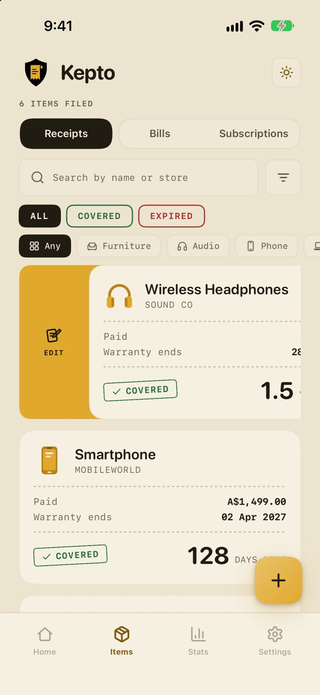
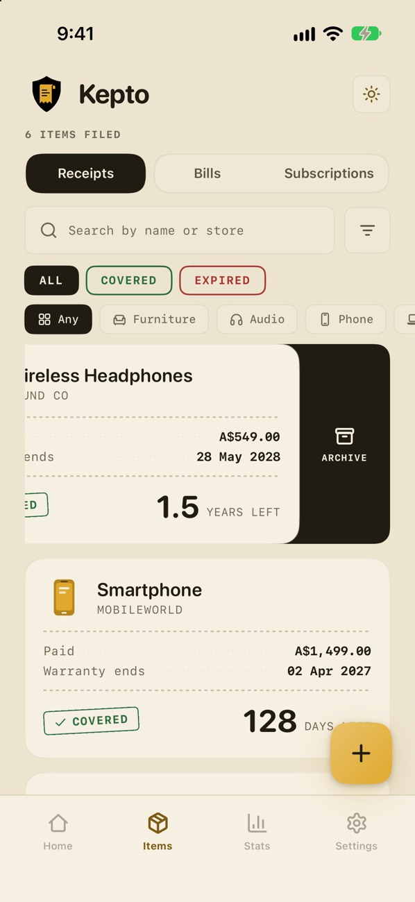
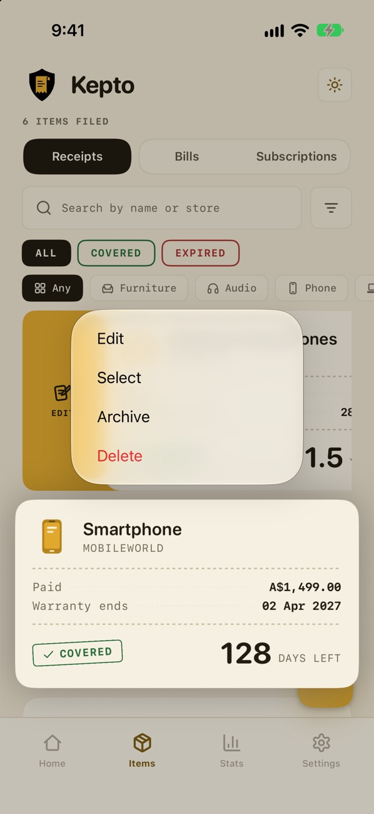
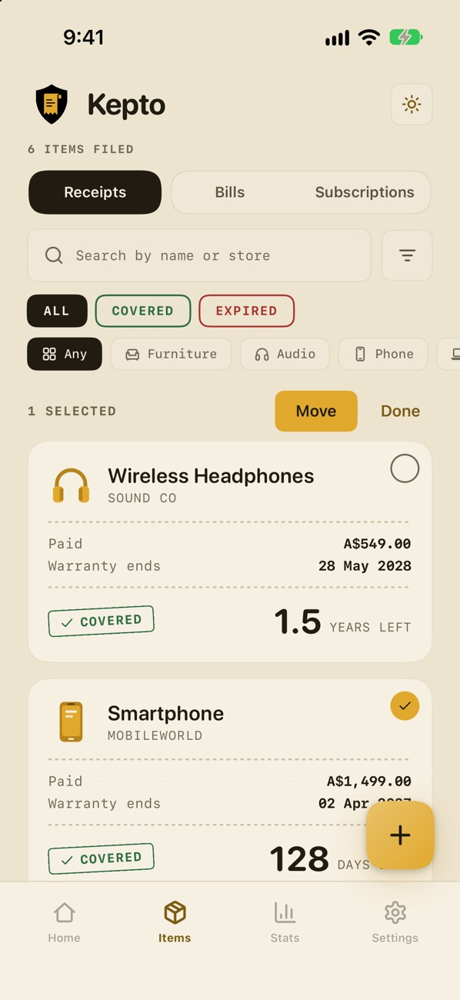
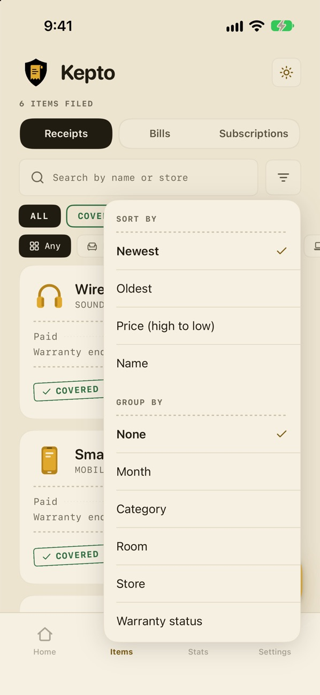
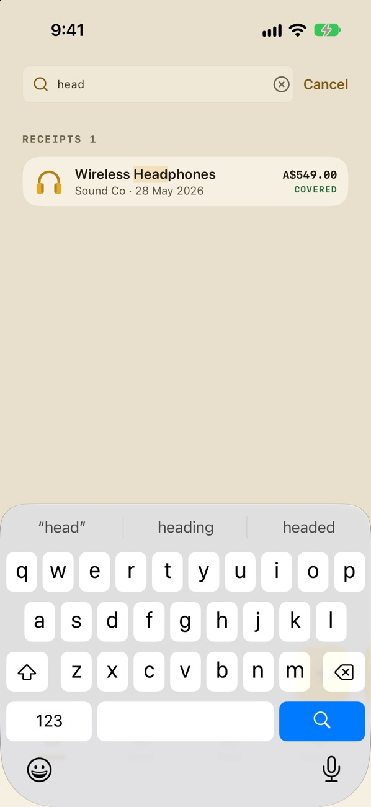

Kepto shortcuts worth knowing.
Most of Kepto is on the screen in front of you. A few of the quickest ways to do things are not, because they are a swipe or a long press away. Here they are, with pictures from an iPhone. They work the same way on Android unless a line says otherwise.
- Swipe a card right to edit it, left to archive it.
- Press and hold a card for Edit, Select, Archive and Delete.
- Select lets you move several receipts at once.
- Start a scan without opening Kepto first.
- Share a receipt into Kepto from any app.
Swipe a card
In Items, swipe a receipt to the right and an Edit tile appears. Tap it, or keep swiping, and the receipt opens ready to change. Swipe to the left for Archive, which puts the receipt away without deleting it.
Bills and subscriptions swipe the same way. Their left swipe marks one as cancelled, and brings it back if it already is.


Press and hold a card
Press and hold any receipt and a small menu opens with Edit, Select, Archive and Delete. It is the quickest way to delete one receipt without opening it.

Move several receipts at once
Choose Select from that menu and every receipt gets a tick circle. Tick the ones you want, then tap Move to give them all the same category, sub-category or room in one go. Tap Done when you have finished.
This is handy after you make a new category and want to file a pile of old receipts under it. It works on the Receipts list in Items.

Sort and group the list
The button beside the search box in Items sorts the list by newest, oldest, price or name. Below that, Group by splits it into sections by month, category, room, store or warranty status. Grouping by room is a quick way to see everything in the kitchen.

Search everything from Home
The magnifying glass at the top of Home searches receipts, bills and subscriptions together. Type a few letters of a product or a shop. The shield button beside it opens the Document Vault, and the button on the right switches between light and dark.

Scan without opening Kepto first
- iPhone, app icon: press and hold the Kepto icon on your Home Screen and choose Scan a receipt.
- iPhone, Control Centre or Lock Screen: add the Scan a receipt control, and the camera is one tap away. It is also in the Shortcuts app, so you can ask Siri for it.
- Android, Quick Settings: edit your Quick Settings tiles and add Scan a receipt.
Share a receipt into Kepto
When a receipt arrives by email or sits in your photos, you do not have to save it first. Open the photo or PDF, tap Share and choose Kepto. Kepto reads it and opens the form with the shop, date and total filled in.
A few more
- Pinch to zoom a receipt photo to read the small print.
- Tap a reminder when it arrives and Kepto opens that item.
- Home screen widgets show the warranty ending next, your next bill and your spending. Press and hold your Home Screen to add them.
- Settings, then Appearance changes the theme, the cards and the navigation bar.
Kepto is free for up to 25 receipts on iPhone and iPad and Android. Stuck on something that is not here? The Support page has more, and you can email support@kepto.com.au.